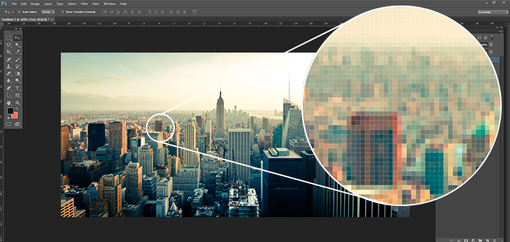
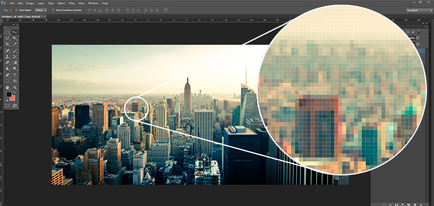

Esta página contiene información acerca de los temas llevados en los modulos 01 y 02 del curso
Uso de colores degradados
Un color que se va degradando progresivamente hasta convertirse en otro es un efecto muy usado para fondos de elementos (o incluso como fondo web) ya que permite conseguir un efecto atractivo. Este efecto antiguamente no era fácil de conseguir y se solía recurrir al uso de imágenes de fondo.
Los degradados CSS son de dos tipos: degradados lineales (linear-gradient) o degradados radiales (radial-gradient). En el primer caso la transformación de color va avanzando línea a línea, mientras que en el segundo caso la transformación de color se produce porque sucesivos círculos concéntricos van cambiando de color.
Un degradado lineal es una imagen que genera CSS a través de la invocación de una función denominada linear-gradient.
¿Cuál es la diferencia entre imagen vectorial y bitmap?
La mayoría de imágenes digitales se pueden clasificar en dos grandes grupos: vectoriales y mapa de bits (bitmpap o imágenes raster),las imágenes vectoriales son redimensionables (escalables) y los bitmaps no, pero los bitmpas pueden representar imágenes reales mientras que las vectoriales representan imágenes más básicas formadas por líneas y manchas de color.
 

Video
HTML5 introduce soporte integrado para el contenido multimedia gracias a los elementos <audio> y <video>, ofreciendo la posibilidad de insertar contenido multimedia en documentos HTML.